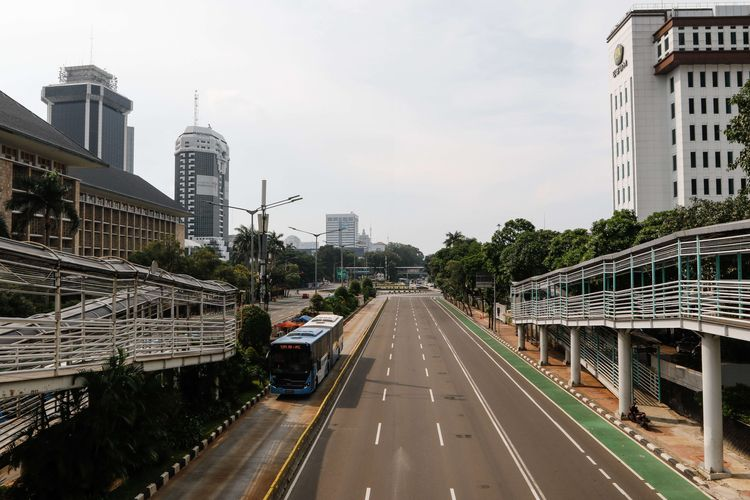

Lalu lintas di Jalan MH Thamrin, Jakarta Pusat pada akhir pekan, Sabtu (18/4/2020). Pemerintah Provinsi (Pemprov) DKI Jakarta resmi menerapkan pembatasan sosial berskala besar (PSBB) mulai 10 hingga 23 April 2020. Dampak dari adanya aturan ini, membuat kondisi dan situasi lalu lintas pada akhir pekan menjadi lengang dan sepi. (KOMPAS.COM/KRISTIANTO PURNOMO)
JAKARTA, KOMPAS.com - Pakar Epidemiologi dari Fakultas Kesehatan Masyarakat Universitas Indonesia, Pandu Riono, menegaskan bahwa penerapan Pembatasan Sosial Berskala Besar (PSBB) yang dijalankan secara sungguh-sungguh oleh pemerintah dan masyarakat telah terbukti cukup efektif dalam menekan laju penyebaran Covid-19. Pandu merujuk pada pelaksanaan PSBB di DKI Jakarta yang dimulai sejak 10 April lalu. Saat ini, hampir 60 persen penduduk di wilayah DKI Jakarta telah memilih untuk lebih banyak beraktivitas di rumah.
"Dalam pengalaman empiris kita, khususnya di Jakarta, ketika mencapai tingkat partisipasi sekitar 60 persen, kita melihat penurunan signifikan dalam jumlah kasus yang dilaporkan," ungkap Pandu dalam sebuah diskusi virtual di Jakarta pada Minggu (3/5/2020).
"Kehadiran PSBB ini bukan hanya sebuah wacana, melainkan telah memberikan dampak yang nyata," tambahnya. Pandu menekankan bahwa pengalaman yang diperoleh dari implementasi PSBB di Indonesia, meskipun hanya di Jakarta, memberikan pelajaran penting tentang efektivitas langkah-langkah ini dalam menanggulangi pandemi.
Pandu mengaku telah berkomunikasi dengan Gubernur DKI Jakarta Anies Baswedan agar penerapan PSBB ini dapat dipertahankan bahkan ditingkatkan hingga 70-80 persen. Sehingga, kurva penyebaran kian melandai dan masyarakat dapat segera terbebas dari Covid-19. Di sisi lain, menurut Pandu Riono, masih ada daerah yang belum maksimal dalam penerapan PSBB. Sehingga, tidak sedikit masyarakat yang masih terlihat beraktivitas di luar rumah. Berdasarkan hasil pemodelan terbaru yang dibuat, rata-rata masyarakat yang tetap di rumah selama pelaksanaan PSBB secara nasional masih sekitar 50 persen.
Namun, wilayah seperti Jawa Tengah, justru tingkat kepatuhan masyarakat untuk tetap di rumah masih di bawah 40 persen. Sementara, Jawa Timur saat ini sudah mulai mencapai rata-rata persentase nasional. "Kita harapkan mereka meningkatkan 10 persen saja. Jatim dan Jabar sudah mulai sampai 60 persen efeknya seperti DKI itu akan terjadi di beberapa wilayah lainnya," kata dia. Ia pun berharap agar pelaksanaan PSBB dapat diinisiasi hingga ke tingkat masyarakat atau berbasis komunnitas. Pasalnya, dengan demikian implementasi dari kebijakan ini dapat berjalan dalam jangka panjang. "Karena nanti ketika restriksi ini pelan-pelan dilepas, itu tetap kita bisa membuat norma baru, perilaku baru, yang membatasi seperti memakai masker, sehingga benar-benar sustain sehingga capai titik (penyebaran) yang terendah," ujar Pandu.